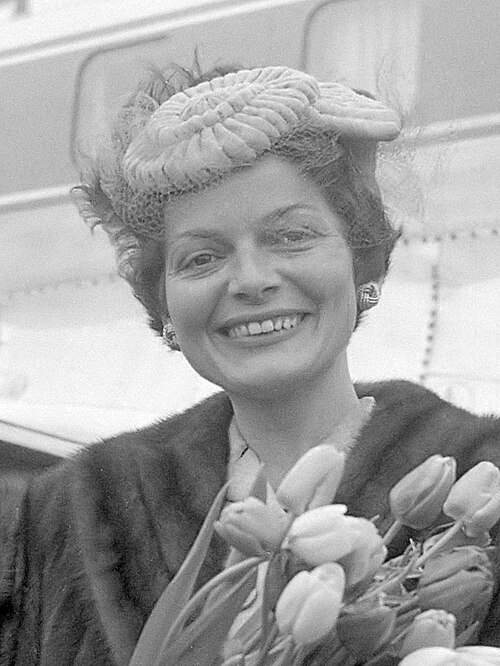
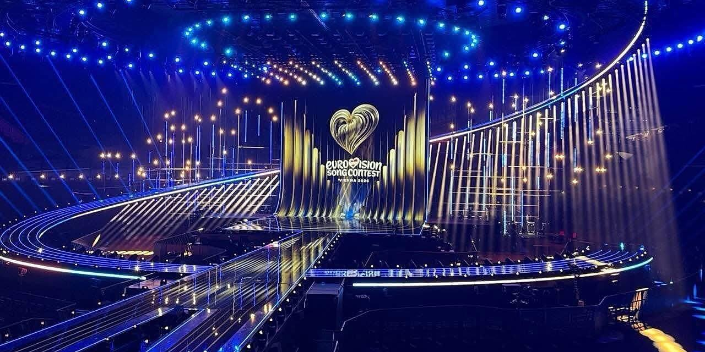
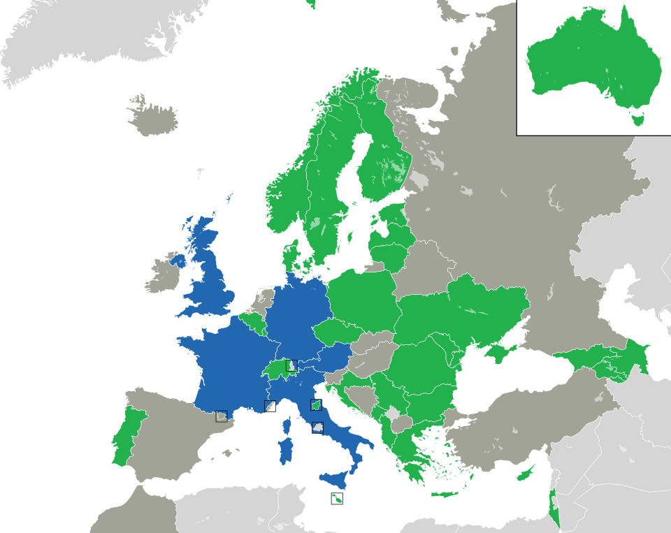

het logo van eurovisie
Lys Assia. de eerste winnaar van eurovisie in 1956
het 2025 beeld dat word uitgegeven aan de winnaar
a


de Oostenrijkse winnaar van de 2025 eurovisie
het stadium van de 2026 song contest
een kaart met alle landen die meedoen aan eurovisie dit jaar. blauwe landen zijn automatische qualifiers

het logo van eurovisie
Lys Assia. de eerste winnaar van eurovisie in 1956
het 2025 beeld dat word uitgegeven aan de winnaar